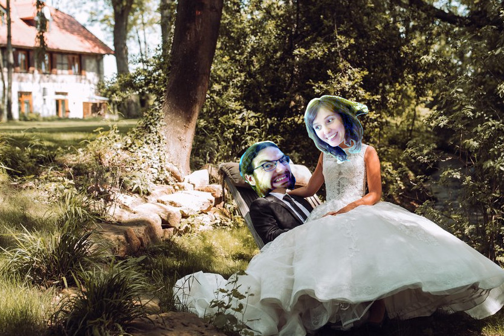

Hochzeit von Steffi & David
Hiermit laden wir Euch herzlich ein zu unserer Hochzeit am
25. Mai 2024

Wenn Ihr uns etwas schenken wollt, würden wir uns freuen, wenn Ihr uns mit einem kleinen Beitrag für unsere Flitterwochen unterstützt.
Location
Unsere freie Trauung sowie die Feier findet in der Raumühle in Alzey statt:

Raumühle in 55232 Alzey-Dautenheim
raumuehle.de
Ablauf
ab 14:00 Uhr
Ankunft der Gäste (mit Getränken & Snacks)
15:00 Uhr
Beginn der freien Trauung
ca. 15:30 Uhr
Sektempfang und Häppchen
ab 18:00 Uhr
Abendessen in Buffetform (für Vegetarier und Veganer ist gesorgt)
danach
PARTY OPEN END
Fahrdienst
Das Dorint Hotel ist 1,6 km von der Location entfernt und in ca. 20 min. zu Fuß und in ca. 6 min. mit dem Auto erreichbar. Parkplätze sind an der Raumühle genügend vorhanden.
Wir haben einen Fahrdienst organisiert, der euch nachts (22:00 - 4:00) wieder zum Hotel fährt.
Hinweise
Der Empfang, freie Trauung sowie das Buffet finden draußen auf einer Wiese statt. Bei starkem Regen werden Zelte aufgestellt. Die Party am Abend findet drinnen statt.